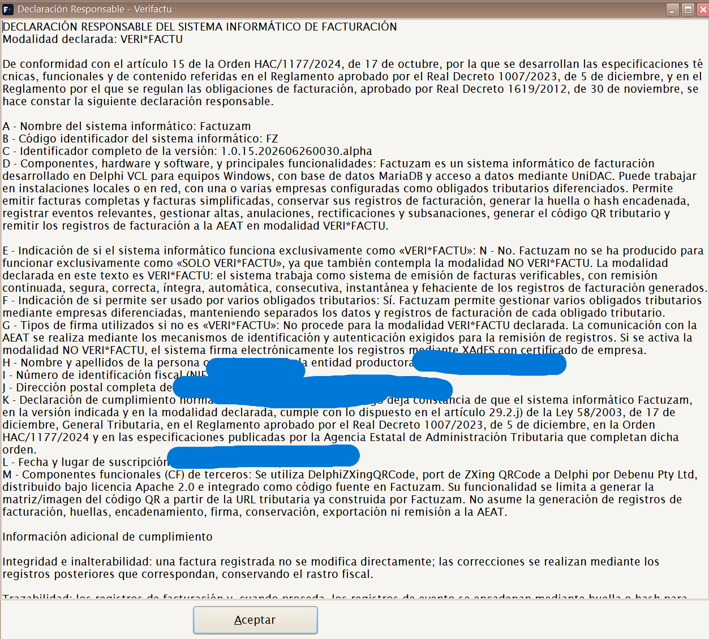
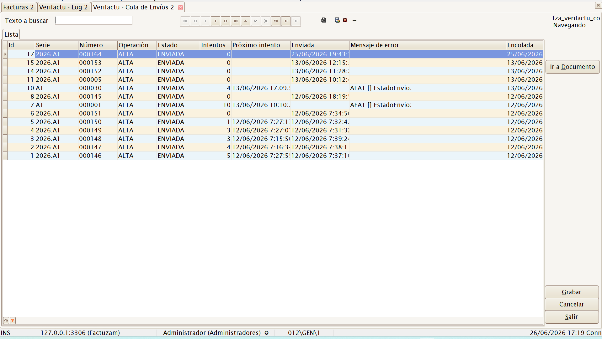
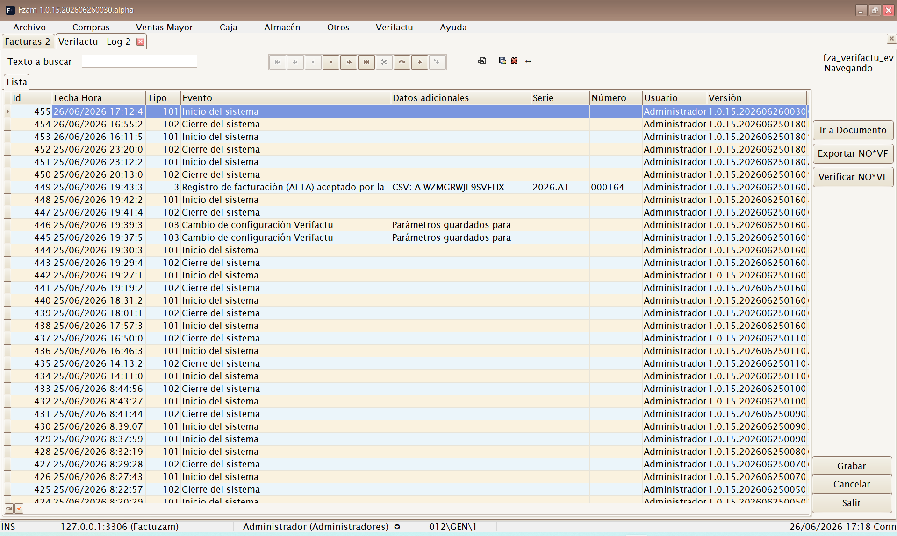
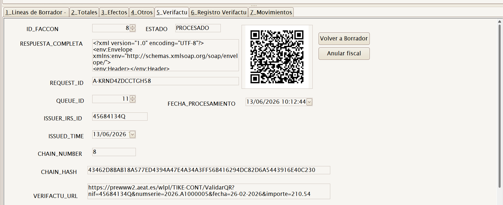
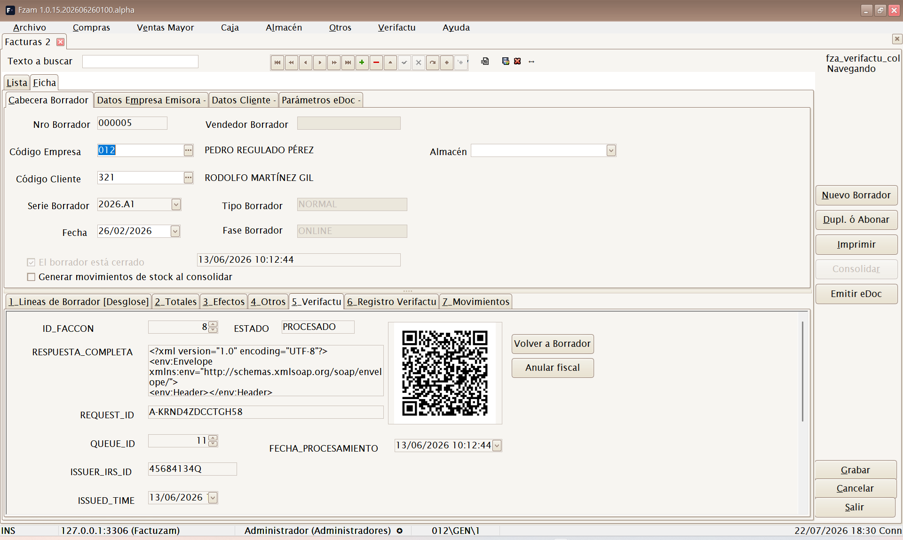

11 · Verifactu (AEAT)
Verifactu es el sistema de la Agencia Tributaria (AEAT) para los sistemas de facturación verificables (SIF) del RD 1007/2023. Con Verifactu activo, cada factura o ticket que emite Factuzam:
- se imprime con un código QR tributario y la leyenda «VERIFACTU -
Factura verificable en la sede electrónica de la AEAT»*;
- se comunica automáticamente a la AEAT en segundo plano, encadenada
con las anteriores mediante una huella SHA-256 que garantiza que no se pueden alterar ni borrar facturas.
Este capítulo explica cómo se configura, cómo trabaja de forma automática y qué acciones fiscales (anular, rectificar, subsanar…) tienes disponibles.
Verifactu es un subsistema transversal: afecta a las Facturas de venta, a las Facturas Simplificadas y al TPV de Caja. Aquí se documenta de forma unificada.
1. Cómo funciona (visión general)
Venta / Factura
│
▼
Se encola ──► fza_verifactu_cola (estado PENDIENTE)
│
▼
Hilo de envío en segundo plano (cada X segundos)
│ reclama filas PENDIENTE → PROCESANDO
▼
Envío a la AEAT (SOAP, certificado de la empresa)
├── Aceptado ─► ENVIADA · factura CONSOLIDADA · genera QR y hash
└── Error ─► reintento con espera creciente; al agotar, ERRORPuntos clave:
- El QR del ticket se genera en local al imprimir; no espera a la
respuesta de la AEAT, así que la venta en caja nunca se ralentiza.
- La comunicación la hace un proceso en segundo plano (la «cola»), de
modo que el cajero sigue trabajando mientras las facturas se envían.
- Cada envío aceptado encadena su huella con el de la factura anterior
del mismo NIF emisor: es la garantía de integridad que exige la AEAT.
2. Configuración previa (administrador)
Antes de activar Verifactu hay que dejar tres cosas listas:
2.1 Certificado de la empresa
En Archivo ▸ Empresas ▸ Certificado / Verifactu se indica el número de serie del certificado y su tipo. La aplicación usa ese certificado (del almacén de certificados de Windows) para firmar el envío a la AEAT. Sin certificado válido, los envíos fallan.
2.2 Parámetros de Verifactu
En Otros ▸ Parámetros del entorno, categoría Verifactu:
| Parámetro | Significado |
|---|---|
| Activo | Interruptor general de Verifactu. Se puede activar/desactivar en caliente, sin reiniciar. |
| Entorno | PRE (pruebas de la AEAT) o PRO (producción real). |
| NIF del SIF | NIF del sistema informático de facturación. Obligatorio: si está vacío, la AEAT rechaza con el error «[1100] NIF» (ver diagnóstico). |
| Razón social del SIF | Nombre/razón del productor del sistema. |
| Id. de instalación | Identificador de esta instalación. |
| Segundos de ciclo | Cada cuánto el proceso de envío revisa la cola (por defecto 60 s). |
| Máx. intentos | Reintentos antes de marcar una factura como ERROR (por defecto 10). |
| URLs de QR y de envío (PRE/PRO) | Direcciones de la AEAT para el cotejo del QR y para el envío; vienen rellenas por defecto. |
Cambia primero a
PREpara probar contra el entorno de pruebas de la AEAT. En PRE, el NIF del obligado debe estar dado de alta en el censo de pruebas y guardar relación con el certificado. Pasa aPROsolo cuando todo funcione.
2.3 Activación
Marca Activo en los parámetros. A partir de ese momento, las nuevas ventas y facturas se imprimen con QR y se encolan automáticamente.
3. El menú Verifactu
Con el subsistema instalado aparece el menú principal Verifactu con tres opciones (todas se pueden ocultar por grupo desde Permisos):
Verifactu
├── Declaración Responsable
├── Cola de Envíos
└── Verifactu LogDeclaración Responsable
Muestra el texto de la declaración responsable del sistema de
facturación (art. 13 del RD 1007/2023), compuesto con el nombre del
sistema (Factuzam), su identificador, la versión instalada y los
datos del productor/instalación configurados en los parámetros. Es el
documento que acredita que el programa cumple la normativa.

▢ Captura pendiente — Modal de Declaración Responsable.Cola de Envíos
Consulta de la cola de comunicación (fza_verifactu_cola): muestra cada
factura pendiente o procesada con su estado, número de intentos,
fecha del próximo intento y el mensaje de error si lo hubo.
| Estado | Significado |
|---|---|
| PENDIENTE | Encolada, esperando a que el proceso la envíe. |
| PROCESANDO | El proceso la está enviando en este momento. |
| ENVIADA | Aceptada por la AEAT y consolidada. |
| ERROR | Agotó los reintentos; requiere revisión. |

▢ Captura pendiente — Cola de Envíos con estados e intentos.Reproceso manual: en esta pantalla puedes editar las columnas Estado, Intentos y Próximo intento de una fila. Al grabar, el proceso la retomará en el siguiente ciclo. Es la forma de relanzar un envío que quedó en
ERRORtras corregir su causa (p. ej. el NIF del SIF o el certificado). El resto de columnas son de solo lectura.
Verifactu Log
Consulta del registro encadenado de eventos (fza_verifactu_eventos):
la traza completa de altas, anulaciones y respuestas de la AEAT con su
cadena de huellas SHA-256. Es la pantalla de auditoría del sistema.
Solo lectura.

▢ Captura pendiente — Log de eventos con la cadena de hashes.4. Verifactu en la ficha de la factura
Al abrir una factura (normal o simplificada) dispones de dos pestañas y un botón específicos:
- Pestaña Verifactu — muestra el resultado de la comunicación: el QR
generado, la URL de cotejo de la AEAT, la huella de cadena
(CHAIN_HASH), el estado de la consolidación y los identificadores
(CSV, id de cola, id de petición). Incluye los botones Consultar
Estado y Reconsolidar OFFLINE.
- Pestaña Registro Verifactu — el log de eventos de esa factura
concreta.
- Botón Consolidar — fuerza el registro/comunicación de la factura a
Verifactu (normalmente no hace falta: la cola lo hace sola).

▢ Captura pendiente — Pestaña Verifactu de la factura (QR, URL, hash, estado).Una factura consolidada (
ESCONSOLIDADA = S) ya está registrada en la AEAT y no se puede modificar ni borrar: cualquier corrección se hace con una rectificativa o una anulación (ver abajo). Es el principio de inalterabilidad de Verifactu.
5. Acciones fiscales sobre una factura emitida
Como una factura registrada no se puede tocar, Verifactu ofrece distintos caminos según lo que necesites. Están disponibles en la lista de Facturas (Buscar/Modificar) y en Buscar operaciones del TPV de Caja, siempre sobre una factura ya consolidada:
| Necesitas… | Acción | Qué hace |
|---|---|---|
| Anular una venta inexistente o errónea | Anular (Verifactu) | Encola un registro de anulación. La factura pasa a CANCELADA. |
| Corregir importes o conceptos | Rectificar | Crea una factura rectificativa (importes en negativo) ligada a la original, que queda como RECTIFICADA. Se puede rectificar varias veces. |
| El registro se comunicó con errores | Subsanar (Verifactu) | Reenvía el registro corregido (subsanación), p. ej. tras un «aceptado con errores». |
| Un cliente pide factura nominativa de su ticket | Facturar ticket (F3) | Crea una factura normal en sustitución de la simplificada, copiando sus líneas, a nombre del cliente. |
| El cliente se identifica en el momento de la venta | Factura (F8) en la fase de cobro | Graba la venta directamente como factura normal (no ticket); exige cliente con NIF e imprime en A4/PDF. |

▢ Captura pendiente — Botones Consolidar / Anular / Subsanar / Rectificar / Facturar ticket.Cada una de estas operaciones se vuelve a encolar y se comunica a la AEAT igual que un alta normal, conservando la trazabilidad (qué factura rectifica o sustituye a cuál). La lista de facturas muestra además una columna «Cola Verifactu» con el último estado de cada factura.
Anular ≠ Rectificar: anular elimina fiscalmente la factura; rectificar la corrige emitiendo otra que la referencia. Para un cambio de importes lo correcto suele ser rectificar.
6. Diagnóstico de problemas frecuentes
Una factura se queda en ERROR en la cola. Abre Verifactu ▸ Cola de
Envíos y lee el mensaje de error de la fila. Causas habituales:
- «[1100] NIF» — falta el NIF del SIF en los parámetros, o el NIF de
la empresa/cliente está mal formado (con guiones o longitud distinta de 9). Corrige y reprocesa la fila.
- Certificado — el número de serie del certificado de la empresa no es
válido o no está en el almacén de Windows del equipo.
- En PRE — el NIF no está censado en el entorno de pruebas o no guarda
relación con el certificado.
Tras corregir la causa, relanza el envío editando la fila en la cola
(estado → PENDIENTE, intentos → 0) o súbe el parámetro de máximo de
intentos: el proceso revive solo las filas en ERROR que aún tengan
intentos disponibles.
El sistema se autocura ante duplicados: si la AEAT acepta pero falla el guardado local, en el reintento la AEAT responde «registro duplicado» y la aplicación lo da por bueno. No hay que hacer nada.
7. Resumen para el día a día
- Con Verifactu activo, no tienes que hacer nada especial: vende y
factura con normalidad; el QR y el envío son automáticos.
- Si una factura está mal, no la borres: usa Rectificar, Anular
o Subsanar según el caso.
- Vigila de vez en cuando Verifactu ▸ Cola de Envíos: si todo está en
ENVIADA, vas al día; si ves ERROR, revisa el mensaje y reprocesa.
- Ante cualquier incidencia con la AEAT, ten a mano la versión del
programa (Ayuda ▸ Acerca de) y la Declaración Responsable.